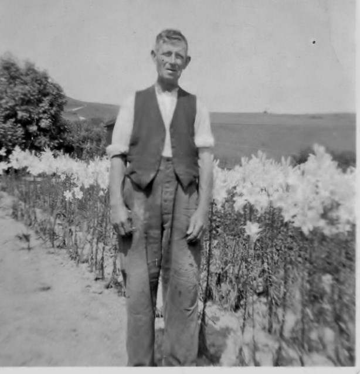

William Ernest Sellis 1881 - 1953
[ Home ] | [ Calendar ] | [ Surnames Index ] | [ Errors ] | [ Family History ]A general labourer and the child of James Page and Elizabeth Sellis, William Sellis, (also known as William Page) the third cousin once-removed on the father's side of Nigel Horne, was born in Folkestone, Kent, England on 12 Mar 18811, was baptised there at Christ Church on 8 May 1881 and married Ellen Wellard (with whom he had 4 children: William Charles Richard, Lena H M, Horace Stanley Wallis and Albert Edward Jellico, along with 1 surviving child) in Dover, Kent, England around May 19003. On 29 Sept 1939, he was living at 65 Marshall Street in Folkestone1 - less than a mile from his third cousin once-removed on his father's side Jessie Hammond who was living at 71 Penfold Road in Folkestone.
He died on 8 Mar 1953 in Folkestone2 (died on way to Royal Victoria Hospital, Folkestone) and was buried in Hawkinge, Kent, England on 14 Mar 1953 (an overcast day)4.
Parents
- James Henry was born on 14 Oct 1861
- Elizabeth Ann
Children
- William Charles Richard was born on 4 Mar 1910
- Horace Stanley Wallis was born on 11 Nov 1913
- Albert Edward Jellico was born on 3 Nov 1915
Citations
- 1939 Register - Findmypast (was the head of the household)
- England & Wales deaths 1837-2007 - Findmypast
- England & Wales Marriages 1837-2005 - Findmypast
- UK, Select Cemetery Registers, 1873-2014
Media
William Ernest Sellis

William Ernest Page - Ellen Wellard - Gravestone
England & Wales deaths 1837-2007 - BMD/D/1953/1/AZ/001002/104
1939 Register - TNA/R39/1721/1721B/021/42
Kent, Canterbury Archdeaconry baptisms 1538-1912 - GBPRS/CANT/B/96013388
England & Wales births 1837-2006 - BMD/B/1881/2/AZ/000512/158
1939 Register Transcription - TNA-R39-1721-1721B-021-44
England, Births & Baptisms 1538-1975 Transcription - R_884904671
England, Births & Baptisms 1538-1975 Transcription - R_884909779
Family Tree

Map
Generated by ged2site. Last updated on Jul 3, 2024
Known Issues
No records of living with anyone